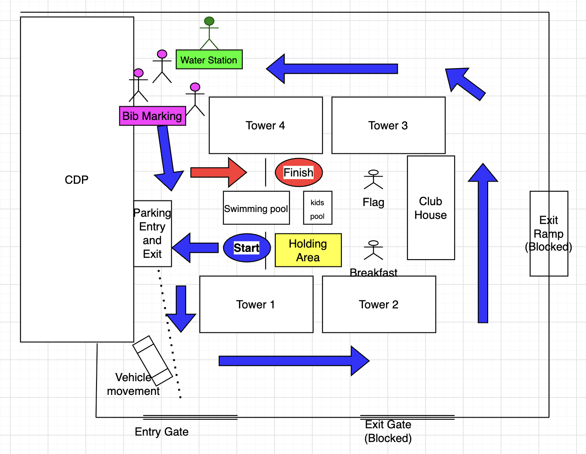

🌙 Before the Race
- Sleep well on Friday night and come well rested.
- Eat something before the race. Have something familiar and easy to digest, such as peanut-butter bread or a banana. Avoid trying anything new on race day.
- Stay hydrated. Drink enough water before the race. If you normally use electrolytes, you can have an electrolyte drink as well.
🎒 Things to Bring for the Run/Walk
- Bib: Attach your bib securely to your T-shirt/dress. Keep it visible at all times and positioned so volunteers can easily tick-mark it.
- Running/Walking Shoes: Wear comfortable shoes suitable for running or walking.
- Reusable Water Bottle: Carry one if you can. You can also leave it for use before and after the race. Let's reduce waste by avoiding disposable cups wherever possible. 🌱
- Lots of Enthusiasm & Sportsmanship! ❤️🇮🇳 Come with a big smile, encourage fellow runners and walkers, and enjoy the spirit of the event!
1. 🏁 Start & Finish
- Start: Between Tower 1 and the Swimming Pool
- Finish: Between Tower 4 and the Swimming Pool
- The route goes around all the towers.
- 🚩 Please do not enter the flag-hoisting area until you have completed your final round.
2. 🏃 Keep Left / Right
- 🏃 Fast runners → Left side
- 🚶 Slow runners & walkers → Right side
- Please maintain your side to keep everyone safe and allow runners to pass smoothly.
3. ✅ Bib Tick Marking
- Volunteers will be stationed near Tower 4.
- Get your bib tick-marked after every completed round.
- Make sure every round is recorded.
4. ⏰ Race Timings
- Start times for each category will be slightly different to avoid crowding.
- Your category start time will be communicated separately.
5. 🎵 Warm-up
- Please arrive on time and join the energetic warm-up session with music before the race. 🎵🔥
6–8. 🏃 Race Categories
1K • 3 rounds
3K • 8 rounds
5K • 13 rounds
- 1K: After your 3rd tick, turn left towards the finish line.
- 3K: After your 8th tick, turn left towards the finish line.
- 5K: After your 13th tick, turn left towards the finish line.
9. 🏅 After the Race
- 🏅 Collect your finisher medal
- 🍌 Collect your refreshment
- ☕ Then enjoy the paid breakfast.
10. ❤️ Most Important – Listen to Your Body
- If you don't feel okay, immediately inform a volunteer.
- Let us know if you feel dizzy, unusually weak, or have difficulty breathing.
- Do not continue running if you are feeling unwell.
- First-aid support and doctors will be on standby.
- 💧 Stay hydrated and use the water stations along the route whenever needed.
11. ❤️ Enjoy the Run!
- Have fun and enjoy the experience.
- Please do not push or overtake dangerously. Give everyone enough space.
- Remember, everyone gets a medal! 🏅
- This is a celebration of fitness, community and Independence Day—not a race against each other.
12. 💡 Pro Tip
Start slow → Increase your speed gradually → Finish strong!
Pace yourself so that you have enough energy to enjoy the rest of the day and all the other events. 🇮🇳🎉
🚦 Route & Vehicle Safety

🔵 Blue Arrow — Stay on this route until your lap is starting.🔴 Red Arrow — Follow after your final lap towards the finish.
- 🚗 Vehicle entry and exit will be through the entry gate for a couple of hours during the event.
- 🚧 Barricades will prevent vehicles from entering the main running area.
- ⚠️ As a runner/walker, do not move into the path of a vehicle. Vehicles will be slowed down, but please give them sufficient space and allow them to pass safely.
Runner safety comes first. Please follow the arrows, volunteer instructions and barricades at all times.
🇮🇳 Run safe, run happy!
Enjoy the spirit of PJP Independence Day Run! 🏃♀️🏃♂️
Jai Hind! 🇮🇳